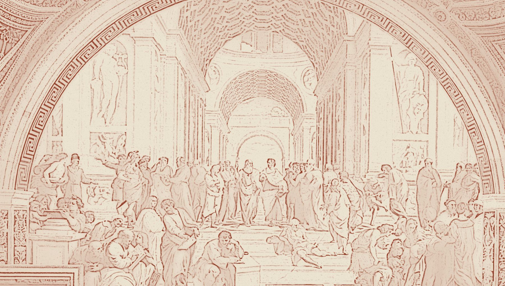

Read the situation.
Start with the data, customer conversations and the way work moves between people. Find the point that needs attention.
Chukwuka Dele-Oyeleru Strategy & Operations

Selected work · 01 to 06
Open a case.
Look a little closer. ↙
Six projects across products, services and operating systems. The drawings below are modern studies of the supplied screenshots.
There are a few things to move around further down ↓How I work
Start with the data, customer conversations and the way work moves between people. Find the point that needs attention.
Connect the proposition, the team and the service. Make responsibilities and handoffs clear enough to use.
Carry the choices into a product, a workflow or a delivery model. The cases show my contribution alongside the teams involved.
Use the result to decide what needs attention next. Retain a person’s judgement where the decision needs it.
My work spans insurance, compliance, recruitment, payments, design ventures and data services.
More context in the résumé ↗A little room to play
A few things from the studio, pinned loosely. Move them around or open one.